7 avril 2025, Grand Cul de Sac Marin, Guadeloupe - Le ciel est toujours gris et le lagon toujours aussi plat. Aucune brise ne vient perturber la surface parfaitement lisse de l’eau. Le silence règne et nous laisse entendre la voie rapide au loin. Une grosse cinquantaine de milles nous séparent d’Antigua, l’île que nous désirons rallier. Après un rapide plein d’eau, nous sortons du mouillage derrière un autre bateau rouge. Nous avons passé un peu de temps ces derniers jours avec son propriétaire et il est hors de question de le laisser devant. Alors, fidèle à lui même, Tsanteleina glisse tranquillement sous Grand Voile et le rattrape inexorablement. Notre concurrent finit par choisir la sortie ouest du lagon. Nous prenons la sortie est, balisée. Les plus compétiteurs reconnaîtront presque une configuration de départ de Match Race (régate en un contre un). Nous nous élançons, une fois le lagon quitté, vers notre destination. La navigation se passe sans encombre avec une moyenne élevée. Nous arrivons de nuit dans la baie de Jolly Harbour. Le sondeur indique rapidement 3m d’eau alors que nous sommes à près d’un mille de la côte (environ 2km). Nous glissons tranquillement dans une eau turquoise révélée par notre projecteur. L’ancre tombe et nous filons nous coucher, fatigués de cette journée de navigation.
Nous débarquons le lendemain matin pour faire nos démarches administratives. Nous arrivons dans une grande résidence, les pieds dans l’eau. On envie les propriétaires des ces demeures : la plupart possèdent des pontons au bout de leur jardin auxquels sont amarrés des bateaux ! Quelle chance. Nous trouvons les autorités du port et commence alors un étrange ballet. Nous remplissons des papiers auprès des douanes. Ils nous les rendent et nous demandent de nous diriger aux autorités sanitaires. Nous remplissons des papiers auprès des autorités sanitaires. Ils nous les rendent et nous demandent de nous diriger aux douanes. Nous remplissons des papiers auprès des douanes. Ils nous les rendent et nous demandent de nous diriger à l’immigration. Nous remplissons des papiers auprès de l’immigration. Ils nous les rendent et nous demandent de nous diriger aux autorités du port. Nous remplissons des papiers auprès des autorités du port. Ils nous les rendent et nous demandent de ne pas nous diriger à Barbuda sans repasser les voir. Nous repartons en espérant ne pas devoir subir de nouveau ce manège. Nous faisons un rapide détour dans le supermarché pour nous renseigner. Et comme si nous n’étions pas déjà suffisamment étourdis, nous observons que les prix sont en ECD (Estearn Caribbean Dollars, la monnaie commune aux Antilles) et les masses, en livres. Trois ECD font environ un euro et une livre correspond à un peu moins d’un demi kilo. Nous ressortons en ayant l’impression que les prix sont chers, sans grande conviction. Pour nous consoler, je prépare des christophines farcies. Ce sont des petits cucurbitacées qu’on trouve aux Antilles. Loann se lance dans la préparation de jolies baguettes.
Est-ce de la distillerie qu’émane cette odeur ? Ou bien sommes nous mouillés devant les évacuations de la capitale ? On ne préfère pas savoir. Par contre, nous nous renseignons pour savoir où nous pouvons trouver du rhum d’Antigua. Il diffère de ceux que nous avions découverts jusqu’à présent car il est fabriqué à partir de mélasse, un sirop de canne à sucre issu de l’étape de raffinage. Nous écumons Saint John, la capitale où nous sommes désormais mouillés, mais aucun magasin ne semble en avoir en stock. Nous avons alors l’occasion de découvrir la ville qui contraste fortement avec Jolly Harbour. Au revoir les voiturettes de golf conduites par des retraités en polo, nous sommes dans une ville aux mille couleurs, aux rues sinueuses arpentées par des bolides trafiqués. Nous retrouvons les ambiances que nous connaissons et qui semblent propres aux Antilles. Les chants des oiseaux exotiques se font couvrir par les klaxons de salutation. Les habitants assis devant leur maison écoutent de la musique dont les basses couvrent le reste des fréquences.
Le lendemain, nous prenons le bus direction English Harbour. Le mouillage est hors de prix dans cette ville pourtant mythique pour les régates qui en partent. Par ailleurs, nous apprécions nous mêler à la vie locale dans ce bus qui, cahin-caha, traverse l’île. Nous sortons du bus devant un ponton auquel sont amarrés de gros voiliers. Clément s’esclaffe car il aperçoit un des bateaux qui le fait rêver. Nous ne parvenons pas à nous approcher alors nous continuons vers le Nelson Dockyard. Ce chantier naval du XVIIIème siècle est inscrit au patrimoine mondial de l’UNESCO. Nous y déambulons, découvrant les bâtiments réservés à chaque corps de métier. Nous découvrons aussi qu’ils ont du rhum English Harbour, la fameuse cuvée que nous recherchions !
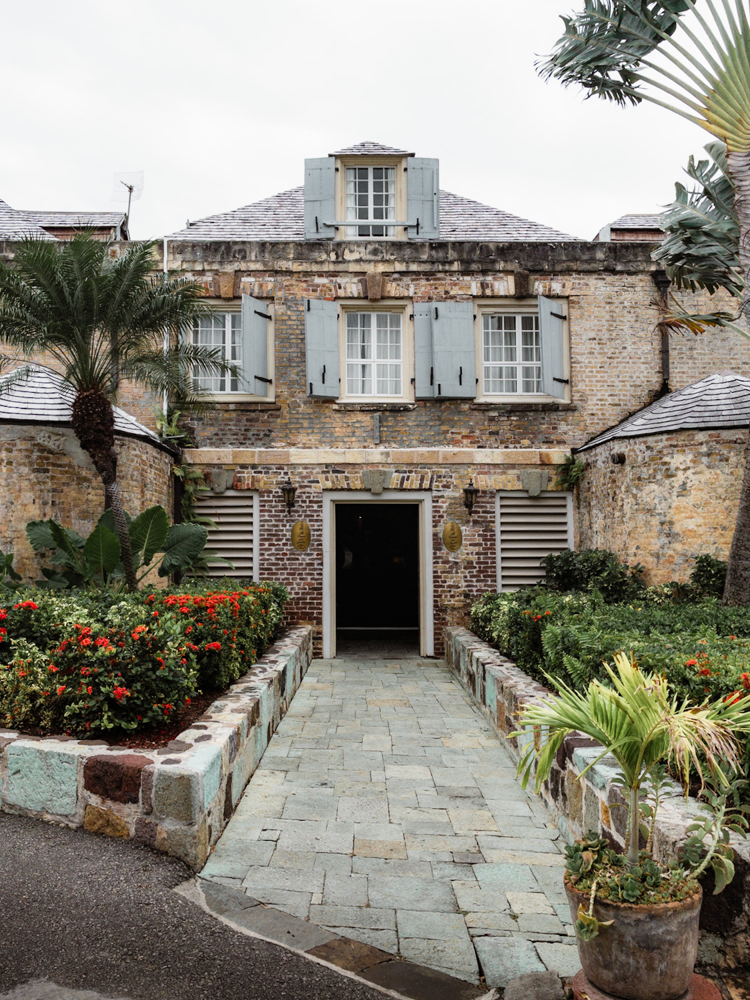
Derniers stop à Antigua : Great Bird Island. Nous nous faufilons dans un étroit chenal pour entrer dans un joli lagon entouré d’îles presque désertes. Presque ? Oui, des gardes réclament une taxe pour marcher sur certaines îles. Nous profitons quand même du mouillage pour nous reposer de notre mois en Guadeloupe qui a été assez intense. Clément et Loann s’appliquent à améliorer l’étanchéité du pied de mât (par lequel de l’eau s’infiltre parfois) en prévision de la transatlantique. Pour ma part, je prends ma revanche sur une pâte brisée (j’avais raté la première). Nous profitons de ce cadre si calme pour vérifier que le moteur et notre pompe à main fonctionnent (pour vider le fond du bateau), toujours en prévision de notre retour vers les Açores.
Quand nous nous approchons du mouillage, nous reconnaissons le bateau d’amis. Alors… nous faisons demi tour. Ils ne tardent pas à nous passer un appel VHF, intrigués et légèrement vexés. Nous avons en fait lancé le drone et il refuse de s’approcher du mouillage car il serait dans l’axe de la piste d’aéroport. Nous faisons un petit aller retour pour faire quelques plans du bateau qui glisse dans une eau turquoise et récupérer le drone. Nous jetons ensuite l’ancre, avalons un repas et sautons sur les wings. Clément et Loann partent tirer quelques bords puis Loann prend le matériel de Clément, je prends le matériel de Loann et Clément… prends l’annexe pour me donner un cours particulier. Quelle chance !
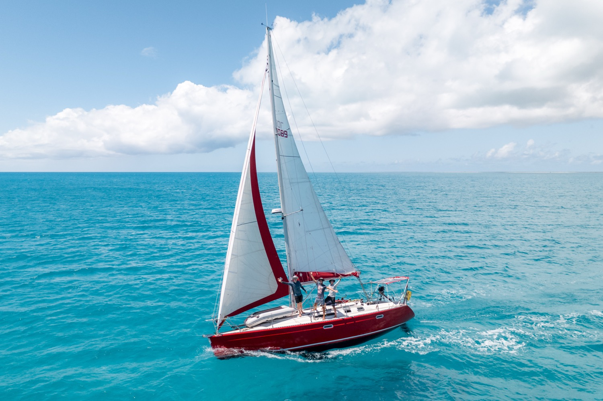
L’annexe et les wings nous servent de nouveau le lendemain pour… aller faire les démarches administratives. Nous devons déclarer notre sortie du territoire mais ne pouvons approcher le bateau. Alors nous embarquons pour 40 minutes de moteur, face au vent. Les démarches faites, Loann gonfle son aile de wing qu’il avait emporté et nous embarquons pour trois quart d’heure de navigation à la voile. Nous sommes contents de poser les pieds sur la jupe du bateau ! Clément occupe son après-midi à monter la vidéo sur notre déploiement des bouées Météo France et Loann me coach en wing. Malheureusement, le vent est trop léger pour vraiment naviguer.
Nous quittons Barbuda qui aura été notre dernière escale hors-Europe. Le spi est en tête et le bateau file vers Saint Eustache.
Quand nous arrivons au mouillage, nous découvrons une dizaine de bateaux à l’ancre. On se croirait dans une pataugeoire dans laquelle des bateaux en plastique se feraient secouer par le remous des jeunes nageurs. Sauf que les bateaux sont des bateaux d’adultes. Nous mouillons une première fois et ne tardons pas à relever l’ancre. Nous nous mettons face à la houle et immergeons nos deux ancres, une devant et une derrière. Ainsi le bateau tangue mais ne roule pas, ce qui est beaucoup plus confortable.
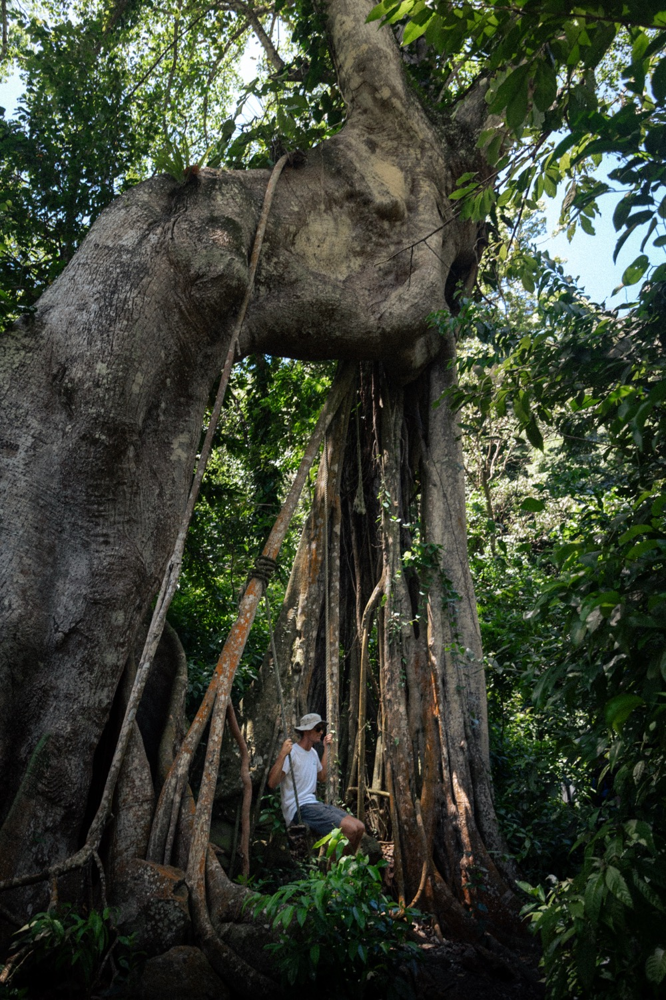
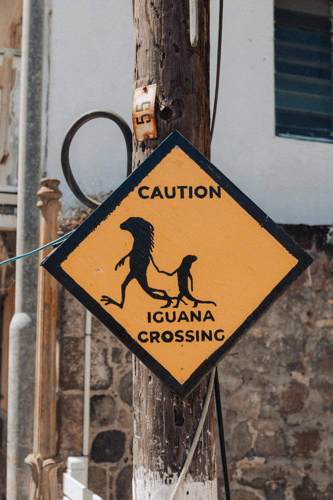
À nous le sommet de Saint Eustache ! Nous débarquons et déambulons dans la ville à la recherche d’une boulangerie. Une fois les sandwichs chargés, nous grimpons tranquillement vers The Quill, le cratère de volcan qui domine l’île. Nous montons à flanc de montagne et admirons la flore. Nous redescendons dans le cratère qui est rempli d’arbres. Une ultime montée pour sortir et arriver au sommet où nous dégustons nos sandwichs. Nous redescendons dans la ville, à la recherche d’un réseau wifi. Nous avons en effet peu de temps à consacrer à Saint Eustache et sa voisine. Le vent tourne dans quelques jours et il nous sera bien compliqué de revenir vers Saint Martin. Nous décidons donc de quitter le mouillage le soir même et nous diriger vers Saba.
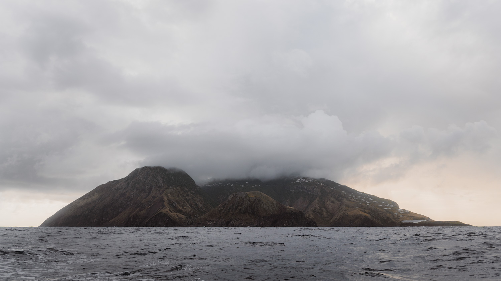
Nous y arrivons en fin d’après midi et sommes sidérés par sa majestuosité. Bien que son sommet soit dans les nuages, les falaises qui nous surplombent semblent ne jamais se terminer. Le soleil descend sur l’horizon et les parois de ce volcan tirent de plus en plus sur le pourpre. La houle longe la côte et nous devons nous mettre à l’abri derrière l’île pour pouvoir dormir. Nous allons nous coucher sans savoir comment nous allons nous organiser le lendemain pour aller faire les démarches administratives puis marcher jusqu’au sommet.
Le moteur démarre alors que le jour se lève. Nous avons décidés de retourner sur la face exposée de l’île pour tenter de trouver une bouée sur laquelle amarrer le bateau. Nous pourrons ainsi facilement accéder au port pour faire nos démarches, puis aux sentiers de randonnée. Nous trouvons bien une bouée devant le port mais le vent qui souffle à 20 noeuds et la houle de près d’un mètre rendent la manœuvre sportive. Nous quittons le bateau sans nous retourner, espérant le retrouver à cet endroit le soir… Nous débarquons, nous déclarons aux autorités et commençons l’ascension par une route à 20% de pente.
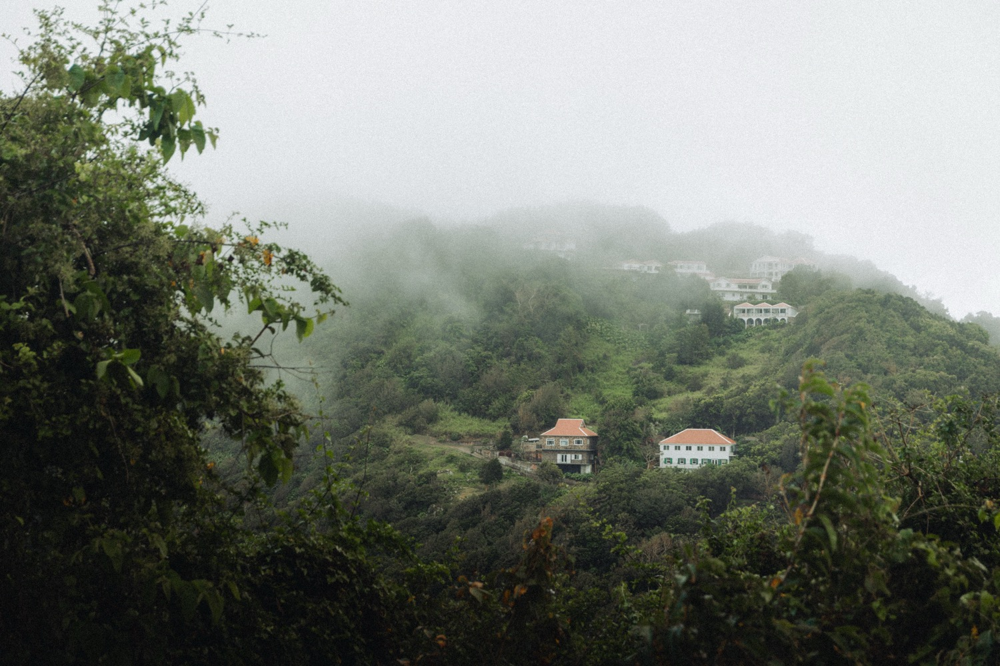
Nous arrivons au village principal qui s’appelle ironiquement… The Bottom. Alors commencent les chemins dans une végétation luxuriante. Nous grimpons sous un couvercle vert sur des chemins que les plantes semblent se refuser l’invasion. Nous n’apercevons le paysage que par courtes bribes lorsque les arbres se laissent suffisamment d’espace pour que quelques rayons de soleil se glissent jusqu’à nous. Des petites terrasses de culture nous permettent aussi de profiter de jolis panoramas sur les îles environnantes. Nous entrons cependant bientôt dans l’épaisse couche nuageuse qui recouvre Saba. Commence alors un chemin mieux pavé, couvert de marches, nous grimpons rapidement jusqu’au sommet. Quelques marches sur une corniche nous permettent de nous élever par rapport au cratère. Ça y est ! Nous l’avons fait ! Nous en rêvions et nous y sommes. Après ces heures de préparation, ces navigations périlleuses et ces rencontres incertaines, nous sommes au sommet des Pays-Bas ! Nous nous étreignons, célébrons et crions notre joie. Pas tout à fait… Nous sommes englués dans une épaisse couche nuageuse ne nous laissant voir à plus de quelques dizaines de mètres autour du sommet. C’est tout. Encore...
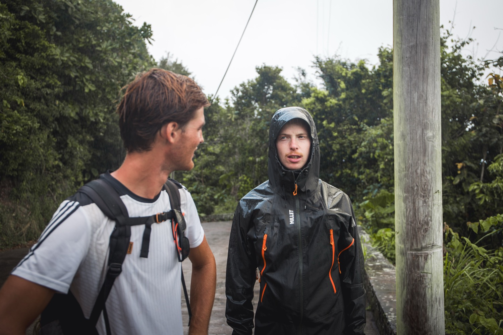
Nous redescendons en restant sur le chemin pavé jusqu’à un parking. Je fais alors les yeux doux à Loann et Clément pour que nous partions vers le nord-est, plutôt que vers le sud où est le bateau. Saba comporte en effet un des plus petits aéroports du monde avec une piste de 400m qui débute et termine avec des falaises. Nous marchons donc sur la route principale jusqu’à apercevoir l’aéroport et… un grain. Nous ne traînons pas trop et mettons le cap sur le bateau. Le déluge commence peu après. Les gentils bonjours des conducteurs auront du mal à nous réchauffer. Les capacités d’évacuation de la route sont surpassées et nous pataugeons. La pluie s’arrête quand nous arrivons au port ou un gentil agent portuaire nous attend avec une grand sourire pour nous demander de payer la bouée. Nous ignorions qu’elle était payante et sommes ravis d’apprendre qu’il n’accepte pas la carte. Le premier distributeur est dans The Bottom (vraiment marrant ce nom). Nous parvenons heureusement à trouver du cash dans un centre de plongée, nous évitant de remonter à 200m d’altitude. Nous embarquons dans l’annexe et, heureusement, le vent et la houle se sont calmés. Nous parvenons à monter sur le bateau qui se fait toujours chahuter. C’est avec tristesse que nous remontons l’ancre et commençons à nous éloigner de Saba. L’île nous aura marqués par sa beauté tant depuis ses chemins que depuis le bateau. Il faut aussi dire que la quasi totalité des touristes ne viennent pas pour l’île mais pour ses fonds marins. Nous nous éloignons donc avec le regret de ne pas avoir mis la tête sous l’eau. Il faudra revenir !
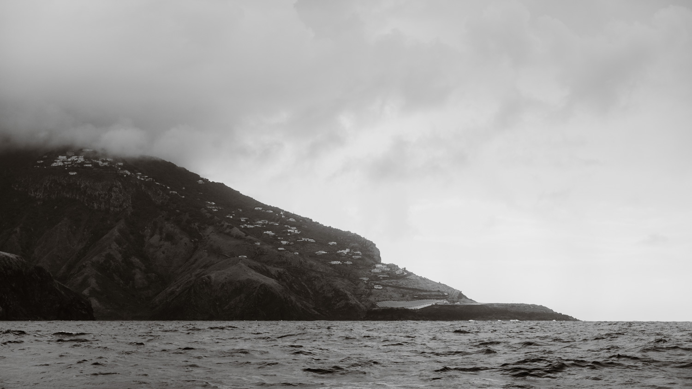
Partis tard de Saba, notre navigation vers Saint Barth se fait de nuit. Clément nous montrent l’étendu de ses connaissances au cours d’un blindtest musical. Nous jetons l’ancre dans l’anse Colombier et allons nous coucher. Nous découvrons le lendemain une jolie baie pleine de bateaux au mouillage. Pour moi l’objectif de cette escale est clair : l’aéroport ! Nous nous y dirigeons en découvrant les villages qui couvrent le paysage vallonné de Saint Barth. Cette île était pour nous le fief des grandes richesses françaises mais nous n’en observons aucune trace ostentatoire. Les maisons sont jolies mais de taille raisonnable et dans un style plutôt cohérent. Les voitures non plus n’ont rien de particulièrement remarquable. Nous arrivons bientôt à l’aéroport et découvrons avec dégoût que les avions atterrissent dans le « mauvais » sens. L’aéroport est en effet particulier car les avions doivent frôler une colline pour ensuite plonger vers la piste. Nous faisons quelques courses puis patientons de nouveau et enfin, un avion arrive du bon côté. Il approche doucement, puis de plus en plus vite. En une poignée de secondes il passe juste au dessus de nous et se jette vers la piste qui se termine sur la plage. À grand renfort de freins, il ralentit, fait demi-tour et va se garer. Je suis aux anges ! Nous rentrons au bateau, fêter ça par un apéro au coucher du soleil.
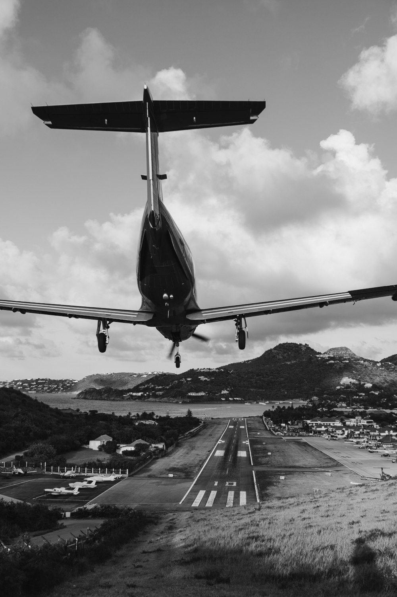
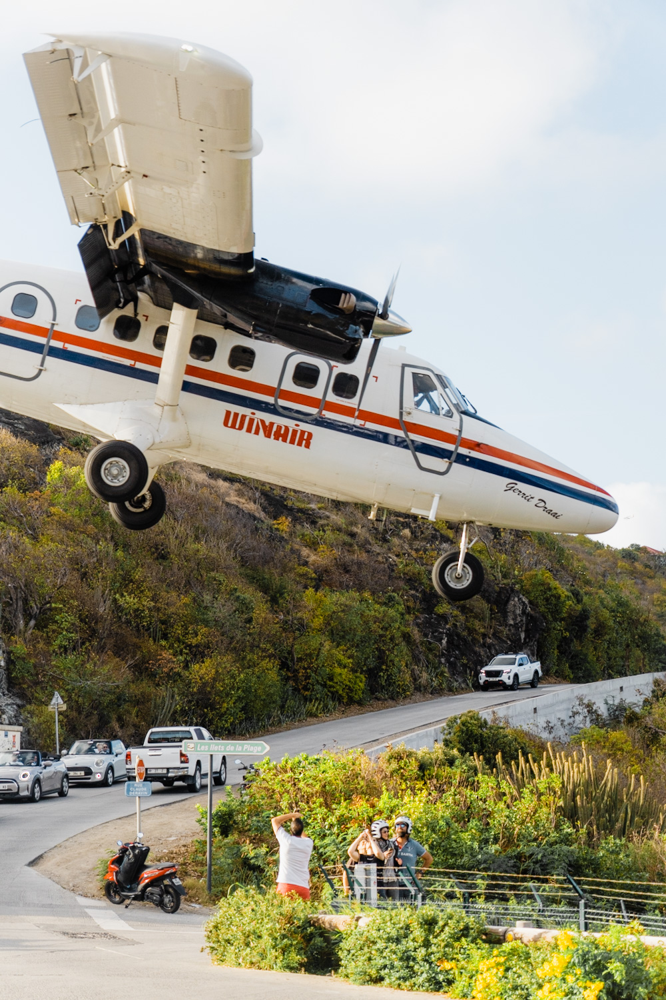
Nous nous dirigeons le lendemain vers le port de Gustavia pour remplir nos réservoirs d’eau. Nous y restons deux heures et c’est suffisant pour que nous devions payer pour une journée entière. Nous y restons donc la journée. Le plein et les courses fais dans la matinée, nous avons l'après-midi de libre. Alors… je vais à l’aéroport évidemment ! Clément et Loann restent au bateau travailler. Cette fois le vent est bien dirigé et les avions passent au-dessus de ma tête pendant tout l’après-midi. Je m’entraîne à faire des filets : en fixant l’avion au centre, je déplace mon appareil pendant que je prends la photo. J’ai du mal à prendre des photos qui ne soient pas complètement floues. Nous quittons le port en fin d’après-midi car le bateau se fait chahuté et parce que nous ne voulons pas payer plus de taxes. Nous mettons nos ancres dans la baie du Gouverneur de sorte de nous placer face à la houle.
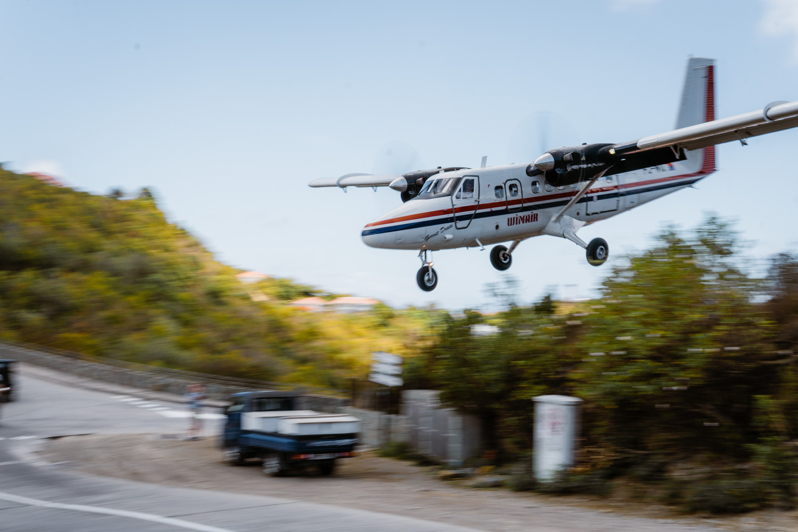
Nous passerons les jours suivants à travailler sur la vidéo Météo France, nos photos et nos retours d’expérience. L’eau qui nous entoure est d’une clarté qui a eu peu d’égales au cours de notre voyage. Nous plongeons (littéralement) avec le caisson étanche pour prendre quelques photos. Enfin, nous retournons au port pour faire notre clearance de sortie (et payer la ribambelle de taxes qui l’accompagne) et mettons le cap vers l’île Fourchue.
Nous arrivons dans la réserve naturelle en fin d’après-midi et mouillons dans la baie déjà bien remplie. Nous grimpons sur le sommet de l’île Fourchue pour observer le coucher de soleil sur Saint Martin. Le lendemain, nous allons plonger autour d’un caillou à quelques centaines de mètres du bateau. L’eau y est assez claire et le rocher tombe à pic. Les gardes de la réserve viennent nous voir et nous indiquent avoir vu des baleines sur leur trajet depuis Saint Barth. Nous pouvons en effet entendre à quelques reprises des sons dans l’eau. Nous commençons à réaliser que la fin de notre séjour aux Antilles approche. Le lendemain commencera notre stand by à Saint Martin, dans l’attente d’une fenêtre météo pour traverser vers les Açores. Nous profitons donc de l’eau chaude, des beaux coucher des soleils et de prendre le temps avant le début de la préparation de la transatlantique.
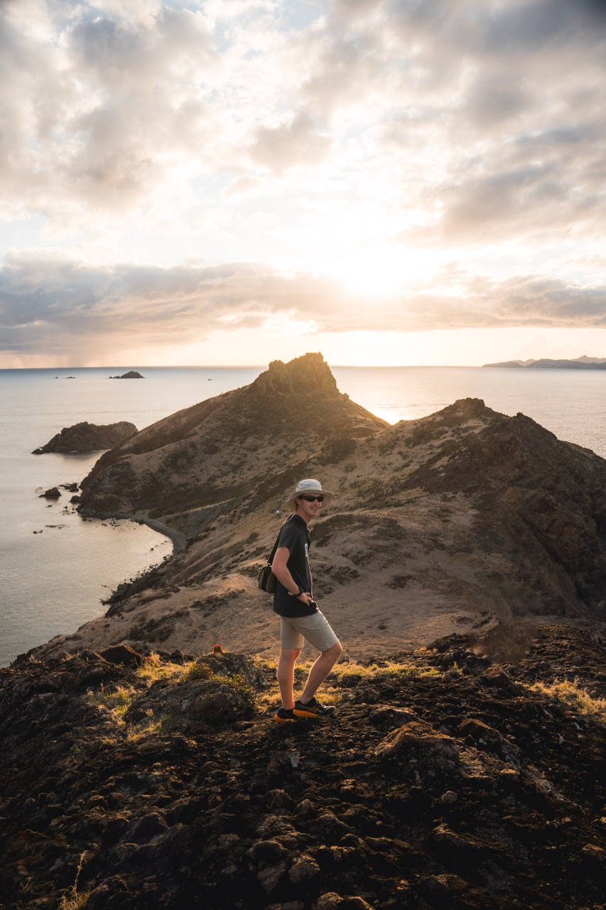
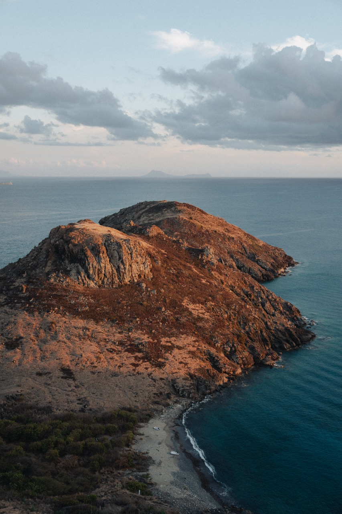
Quand un catamaran de 40 pieds relève son ancre, nous ne tardons pas à saisir cette occasion de régater un peu. Nous remontons la nôtre et nous lançons dans un grand bord de travers vers la pointe nord de Saint Martin. Un grand et long bord puisque l’écart se creuse petit à petit. Le catamaran devant et nous derrière, l’implorant de couper ses moteurs pour rendre la partie plus équitable. Tant pis, la régate attendra. Nous mouillons dans l’anse Marcelle, une petite baie calme et abritée. Enfin calme pour nous parce que notre voisin est dangereusement proche d’un catamaran de location. Celui-ci a mis une importante longueur de chaîne à l’eau et le vent s’étant calmé, ils sont maintenant presque dos à dos. Nous observons la scène avec inquiétude mais heureusement rien de grave ne se produit. Nous allons nous rafraîchir en plongeant autour d’un rocher. La flore y est splendide. Les usuels coraux cerveaux laissent place à toutes sortes de gorgones : de grands éventails en dentelle.
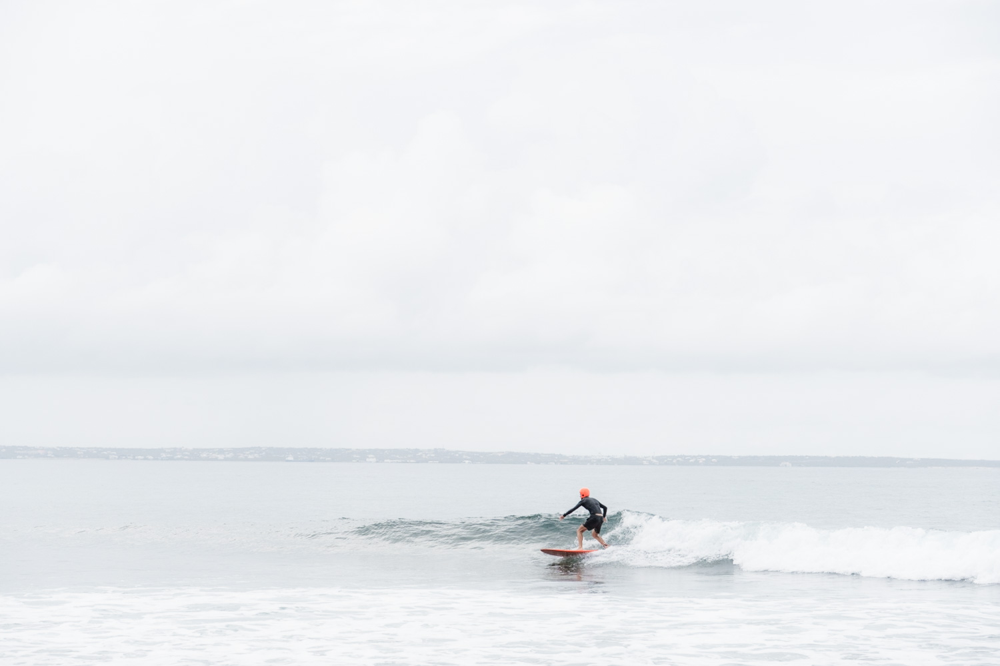
Le lendemain, Clément a un objectif : surfer. Nous n’avons pas rencontré de bonne condition depuis notre départ et il est motivé pour aller voir une vague qu’il a repérée la veille. Après une petite heure de marche sous la pluie nous arrivons sur une pointe rocheuse sur laquelle déferlent quelques vagues. Il n’en faut pas plus, Clément saute à l’eau. Les quelques séries de grosses vagues lui permettent de jouer un peu. Il sort de l’eau radieux !
La pluie ne nous quitte plus pour les deux jours qui suivent. Nous ne sommes plus très habitués à rester confinés dans le bateau mais la chaleur rend l’air moite et c’est assez désagréable. Nous nous sommes déplacés dans la baie de Grande-Case.
Au troisième jour, la pluie s’arrête et nous décidons de partir pour le Pic Paradis, le sommet de l’île. Nous longeons l’aéroport (qui n’a rien de particulier) et commençons notre ascension en nous faufilant entre des bosquets. Nous espérons que le chemin sera en meilleur état que celui de Marie-Galante. Et bien pas vraiment, nous montons dans un lit de ruisseau nous penchant pour éviter les branches, repoussant les araignées aux couleurs intrigantes et en prenant garde de ne pas poser le pied sur une pierre mal assurée. Quand enfin nous parvenons en haut, nous observons le côté néerlandais de l’île. Celle-ci est en effet partagé entre la France et les Pays-Bas (d’où l’absence de taxes, notamment sur le rhum, NDLR). Quand nous redescendons, nos estomacs crient famine et nous nous asseyons à un restaurant de grillades. Bien que l’après-midi soit déjà avancé, de nombreux locaux sont attablés en grands groupes.
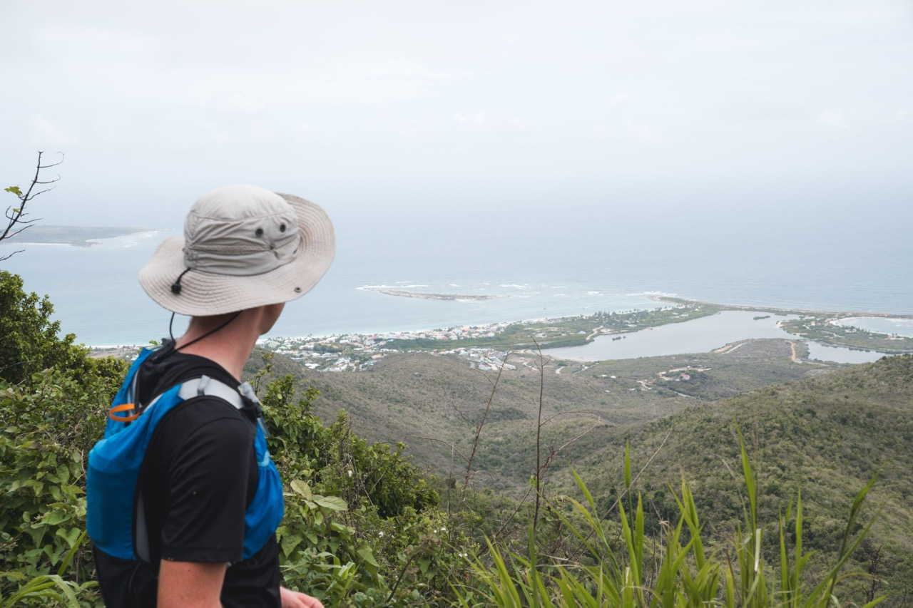
La préparation commence vraiment quand nous arrivons à Marigot, la ville principale de l’île. Nous y faisons les plein d’eau, de gaz et de vivres pour la transatlantique. Nous y effectuons également les dernières réparations. J’ai quand même le temps de faire un aller retour à l’aéroport côté néerlandais. Les avions rasent la plage à l’atterrissage et les touristes peuvent se faire souffler par leurs réacteurs lorsqu’ils décollent. Ce sera ma dernière grande promenade avant de prendre la mer pour plusieurs semaines en direction de l’Europe.